CSIE5098 - Digital Image Synthesis
Shiang-Yun Yang 楊翔雲
Date submitted: 20 Nov 2015
Code emailed: 20 Nov 2015
計算射線和球體的交點，可以參照 /pbrt-v2/shapes/sphere.cpp 中 bool Shpere::Intersect() 的算法。
假設球體圓心座標 \(O\)，射線單位向量 \(I\) 的起點座標 \(C\)，且最近目標交點座標 \(P\)，原半徑 \(\mathrm{radius}\)。射線走單位時間 \(t\) 會到達球面上。
解一元二次方程式之後可以得到 \(t\) 得值，並得到交點座標 \(P\)。
根據物理法則斯乃爾定律計算折射的方向向量，課程中提供三種做法。
變數解釋：入射介面材質 \(\eta_1\)，折射介面材質 \(\eta_2\)，入射單位向量 \(\overrightarrow{I}\)，交點面法向量 \(\overrightarrow{N}\)，折射方向向量 \(\overrightarrow{T}\)
特別小心 ray->d = Normalize(ray->d) 的處理，Heckbert's Method 計算維持在單位圓上，故不用做最後的正規化計算。
| \(\sqrt{}\) | \(/\) | \(\times\) | \(+\) | compute |
|---|---|---|---|---|
| 1 | \(n = \eta_1 / \eta_2\) | |||
| 3 | 3 | 2 | \(I' = I / (-I \cdot N)\) | |
| 3 | \(J = I' + N \) | |||
| 1 | 1 | 8 | 5 | \(\alpha = 1 / \sqrt{n^2(I' \cdot I') - (J \cdot J)}\) |
| 3 | 3 | \(T' = \alpha J - N\) | ||
| 1 | 3 | 3 | 2 | \(T' = T' / \| T' \| \) |
| 2 | 8 | 17 | 15 | TOTAL |
| \(\sqrt{}\) | \(/\) | \(\times\) | \(+\) | compute |
|---|---|---|---|---|
| 1 | \(\eta = \eta_1 / \eta_2\) | |||
| 3 | 2 | \(c_1 = - I \cdot N\) | ||
| 1 | 3 | 2 | \(c_2 = \sqrt{1 - \eta^2(1 - c_1^2)}\) | |
| 7 | 4 | \(T = \eta I + (\eta c_1 - c_2) N\) | ||
| 1 | 1 | 13 | 8 | TOTAL |
| \(\sqrt{}\) | \(/\) | \(\times\) | \(+\) | compute |
|---|---|---|---|---|
| 1 | \(n = \eta_2 / \eta_1\) | |||
| 3 | 2 | \(c_1 = - I \cdot N\) | ||
| 1 | 2 | 3 | \(\beta = c_1 \sqrt{n^2 - 1 + c_1^2} \) | |
| 3 | 3 | 3 | \(T = (I + \beta N ) / n\) | |
| 1 | 4 | 8 | 8 | TOTAL |
其中以 Heckbert's Method 消耗最少計算數。如果除法速度快於乘法，則使用 Other Method，原則上很少有機器運算除法比乘法快。
這部分處理後得到 Transform RasterToCamera。若計算錯誤，會造成一片黑或者圖片顯示的大小問題。座標轉換處理細節可以參考實際的例子，如下圖所示：
作業要求經過 float GenerateRay() 回傳 \(\mathrm{weight} = \frac{\cos^4 \theta'}{Z^2}\)，這麼設置會過暗，根據論文 A Realistic Camera Model for Computer Graphics 中寫道
If the exit pupil subtends a small solid angle from \(x'\), \(\theta'\) can be assumed to be constant and equal the angle between \(x'\) and the center of the disk. This allows us to simplify \[E(x') = \int_{x'' \in D} L(x'', x') \frac{\cos \theta' \cos \theta''}{\| x'' - x'\|} dA''\] to: \[E(x') = L \frac{A}{Z^2} \cos^4 \theta'\] where \(Z\) is the axial distance from the film plane to the dist and \(A\) is the area of the disk.
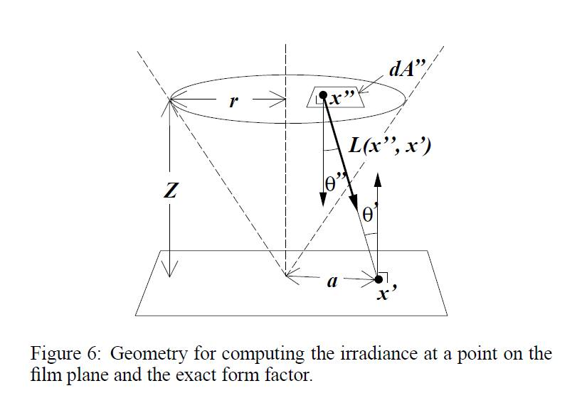
因此需要額外乘上常數 \(A\)，其中 \(A\) 是最裡層的透鏡，因為我們是根據最裡層的透鏡面做均勻取樣，得到 \(A = \mathit{backLens.radius}^2 \pi\)。
單位圓均勻取樣方法有以下兩種，而非均勻取樣的寫法可參照 Sample 3 (錯誤的做法參照) 出來的效果看出。
採用內建函數 CencentricSampleDisk()，採用 A Low Distortion Map Between Disk and Square 論文中提到的方案，將一個正方形壓縮到一個圓形中。參照作法如下圖所示 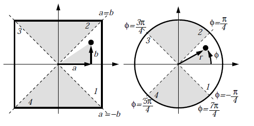
其中給定 \(a, b\) 均勻分布 \([0, 1]\)，則得到 \(r = a, \; \phi = \frac{\pi}{4} \frac{b}{a}\)，最後計算得到座標 \(x = r \cos \phi, \; y = r \sin \phi\)。
採用教科書上提供，其中給定 \(a, b\) 均勻分布 \([0, 1]\)，令 \(r = \sqrt{a}, \; \phi = 2 \pi b\)，最後計算得到座標 \(x = r \cos \phi, \; y = r \sin \phi\)。
給定 \(a, b\) 均勻分布 \([0, 1]\)，令 \(r = a, \; \phi = 2 \pi b\)，最後計算得到座標 \(x = r \cos \phi, \; y = r \sin \phi\)。這種寫法在相同半徑下，角度均勻分布，不同半徑下的周長與 \(r\) 成正比，導致不同半徑的取樣點不均勻，越靠近中心點取樣越密集，意即容易造成中心點看起來較亮。
| 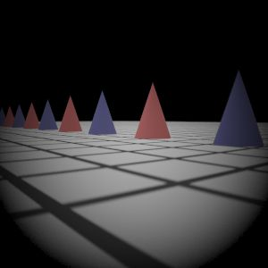
Reference
|
My Implementation (Sampling 1)
|
My Implementation (Sampling 2)
|
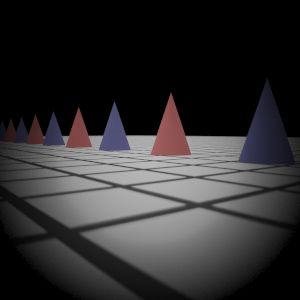
My Implementation (Sampling 3)
|
| 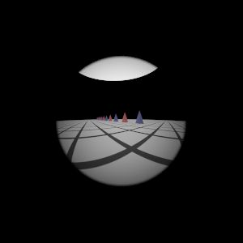
Reference
|

My Implementation (Sampling 1)
|
My Implementation (Sampling 2)
|
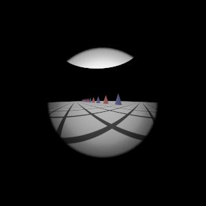
My Implementation (Sampling 3)
|
| 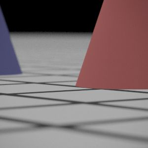
Reference
|
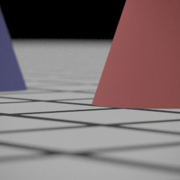
My Implementation (Sampling 1)
|
My Implementation (Sampling 2)
|
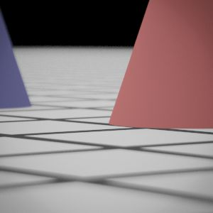
My Implementation (Sampling 3)
|

Reference
|
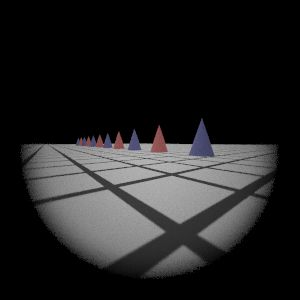
My Implementation (Sampling 1)
|
My Implementation (Sampling 2)
|
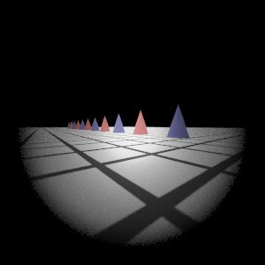
My Implementation (Sampling 3)
|